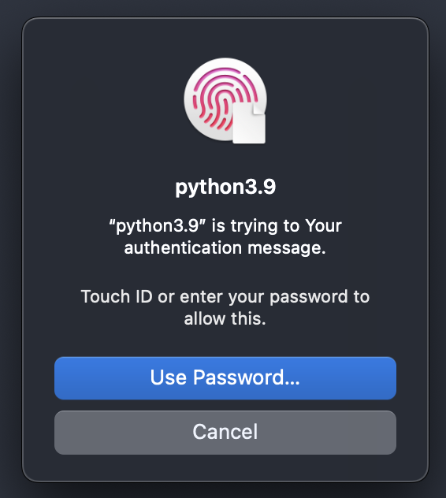

View on GitHub
View on GitHub
 Install in Dash
Install in Dash
 keying Reference
keying Reference
Keying
A simple python wrapper around the LocalAuthentication and Keychain APIs on iOS/MacOS.


Compilation:
swift build
This produces a libkeying.dylib.
Note
The current python module implementation relies on the packaged lib being local.
Other options would be to move things globally (and update the module):
cp mv libkeying.dylib /usr/lib64/python3.9/lib-dynload
cp keying.py /usr/local/lib/python3.9/site-packages
Sample local usage
❯ swift build
❯ python
Python 3.9.7 (default, Jan 27 2022, 19:47:28)
[Clang 13.0.0 (clang-1300.0.29.30)] on darwin
Type "help", "copyright", "credits" or "license" for more information.
>>> import keying
>>> keying.auth("Your authentication message")
True
>>>
